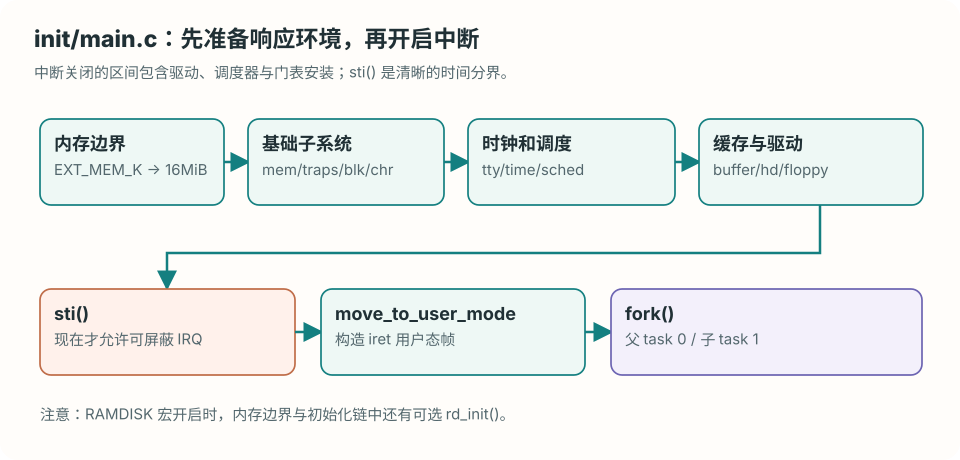
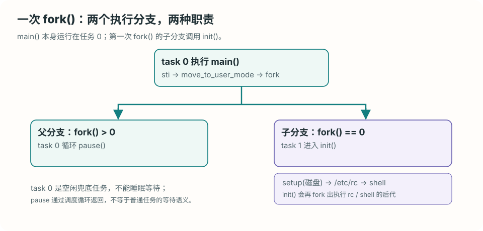

从 main() 到第一个用户进程：初始化的因果链
内存布局、门表与设备先准备就绪，随后开启中断、通过 iret 进入用户态，第一次 fork() 分出任务 0 与任务 1。
初始化 · task 0 / init为什么内核不能直接运行 init()？
当 boot/head.s 将控制权转给 C 代码时，分页已启用，但操作系统还没有完成对时钟中断、磁盘缓冲、终端、根设备和任务结构的初始化。此时贸然打开可屏蔽中断，CPU 就可能跳进尚未安装好的处理入口。
Linux 0.11 的启动策略是先搭好硬件事件和内核数据结构，再打开中断，最后创建普通的用户进程。因此，main() 的顺序不是任意排列；它本身就是一张依赖图。

先从 BIOS 提交的内存数字算起
在 init/main.c，宏 EXT_MEM_K 从物理 0x90002 读取 setup.s 写入的扩展内存 KiB 数。程序计算 memory_end = 1MiB + EXT_MEM_K × 1024，向下按 4KiB 对齐，并将上限约束为 16MiB。然后按照内存容量选择缓冲区终点。
| 内存上限 | buffer_memory_end | 含义 |
|---|---|---|
| > 12 MiB | 4 MiB | 低地址保留更大缓冲区 |
| > 6 MiB 且 ≤ 12 MiB | 2 MiB | 中等缓冲区 |
| ≤ 6 MiB | 1 MiB | 不另外扩大低端缓冲区 |
memory_end = align_down(1MiB + EXT_MEM_K * 1KiB, 4KiB)
memory_end = min(memory_end, 16MiB)
buffer_memory_end = choose(1MiB, 2MiB, 4MiB)
main_memory_start = buffer_memory_end
if RAMDISK: main_memory_start += rd_init(...)
mem_init(main_memory_start, memory_end)进入 mm/memory.c 的 mem_init(start_mem,end_mem) 后，mem_map 先被填成 USED=100，随后仅将指定可分配物理页的计数改为 0。它不是简单的一位“位图”，也不是把全部页一律标为 255；在这里，每个元素是页面引用/使用计数相关的标记。
内存 8MiB、未启用 RAMDISK 时 main_memory_start 是多少？（点击展开解析）
8MiB 在大于 6MiB、且不大于 12MiB 的范围，因此 buffer_memory_end = 2MiB；没有 RAMDISK 的情况下，main_memory_start 也等于 2MiB。
逐项解释 main() 的初始化顺序
原始调用次序是 mem_init → trap_init → blk_dev_init → chr_dev_init → tty_init → time_init → sched_init → buffer_init → hd_init → floppy_init → sti。其中 time_init 从 CMOS 读时间并计算起始时间，不等同于设置 PIT 的时钟频率；sched_init 则安装任务 0 的 TSS/LDT、配置 8253 PIT、安装时钟门和系统调用门。
mem_init(); trap_init();
blk_dev_init(); chr_dev_init();
tty_init(); time_init();
sched_init(); buffer_init();
hd_init(); floppy_init();
sti(); move_to_user_mode();这里函数的参数已省略，目的是展示准确的先后关系，不是可直接编译的函数体。为何先装门表、先装好基础设备，再打开 IRQ？因为当中断发生时，处理器需要一张可用的 IDT，而且对应的代码必须依赖已初始化的全局状态。
用 iret 从 ring 0 进入 ring 3
我们已经在第 5 章通过 head.s 来到内核 C 入口。此时仍处于 ring 0。move_to_user_mode 宏 没有调用现代通用的“切换到用户态”函数，而是手动构造一个看起来像中断返回的数据帧：用户栈段 0x17、用户 ESP、EFLAGS、用户代码段 0x0f 和返回地址。
pushl $0x17 # 将成为用户 SS
pushl %eax # 将成为用户 ESP
pushfl # 将成为 EFLAGS
pushl $0x0f # 将成为用户 CS
pushl $1f # 将成为用户 EIP
iret # CPU 恢复用户态 CS/SS 与执行位置在这个宏中，%eax 事先保存旧的 ESP；iret 结束后，代码重新为 DS/ES/FS/GS 装入用户段选择子。这里发生的是任务 0 的特权级变更，而不是创建新进程；下一条 fork() 才产生子任务。
第一次 fork() 的父子分支
Linux 0.11 的 main() 在进入用户态后执行 if (!fork()) init();。返回 0 的子分支变成任务 1 并执行 init()；父分支仍是任务 0，它最后执行 for(;;) pause();。父进程并没有在 init() 里调用 wait() 阻塞等待——那是旧教程中颠倒了控制流的伪代码。

为什么源文件开头注释强调 fork/pause 的 inline 包装？因为这次 fork 涉及从内核初始上下文分出用户态任务；代码明确要求父侧 main() 在 fork 后避免普通调用/返回造成的栈使用差异。这是 0.11 的特殊限制，不应推广成现代 C 程序的通用建议。
任务 0 调用 pause 后为什么还能被调度执行？（点击展开解析）
因为 schedule() 把任务 0 作为没有其他可运行任务时的保底目标；当任务 0 继续执行时，pause 返回并立即再次进入调度。普通任务则需要被信号或其他条件唤醒。
init() 怎样真正启动用户世界
init() 从 setup(&drive_info) 开始（本阶段在内核中执行对应的初始化系统调用），接着打开 /dev/tty0 并用两次 dup(0) 建立标准输出和错误输出。随后 fork 子任务去打开 /etc/rc、执行 /bin/sh 解释启动脚本；父 init 等待它结束，再循环启动登录 shell、等待并重启。
因此，/etc/rc、第一个交互 shell 和最初的任务 1 是不同概念：init() 是任务 1 执行的函数，shell 是后续 fork/execve 的执行结果。理解此流程可以直接解释“有了内核镜像但仍然进不了 shell”的原因：没有匹配的根文件系统和这些文件。
grep -n 'void main\|void init\|move_to_user_mode\|fork()\|pause()' init/main.c
grep -n 'EXT_MEM_K\|buffer_memory_end\|mem_init' init/main.c
grep -n 'void mem_init\|#define USED' mm/memory.c预期能分别定位 BIOS 内存参数、初始化调用链、第一次 fork 和 init 内后续创建 shell 的代码。不要把本命令的预期位置当作声称已实际运行出的日志。
版本证据与后续问题
- init/main.c：内存边界、初始化顺序、第一次 fork、init 与 shell。
- mm/memory.c：
USED=100、mem_map的含义与物理页范围。 - include/asm/system.h：通过
iret进入 ring 3 的宏。 - kernel/sched.c：
sched_init、task 0 的调度特性。
下一章要补上这里反复出现的几个关键名词：为什么 0x0f 与 0x17 能表示用户段，LDT 又如何把逻辑地址转换成线性地址？